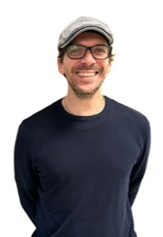
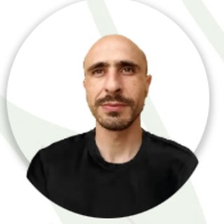
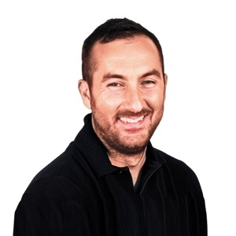
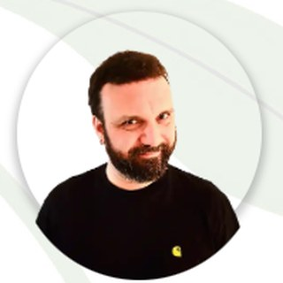
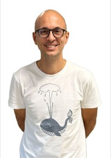

Adaptive orchestration of AI models — for calibrated, auditable decisions.
The methodIt chooses which models to trust, assembles the pipeline, calibrates its confidence, and leaves an audit trail.
Orchestrate many models · select the best subset · fuse the evidence · prove the decision.
From model sprawl to governed intelligence — many models in, the optimal subset out, every decision proved.
Most AI systems answer. Few can explain why that model, why now, and why anyone should trust the result. A model is easy to buy and hard to govern — before trusting a number to a board, a regulator or a field, five questions decide everything, and most organisations cannot answer one of them.
Which model?
And is it the best one for this decision, not just the one already installed?All the signal?
Is every useful source captured and harmonised, or only the convenient ones?Out of the black box?
Can the reasoning be opened and read, or is trust an act of faith?Efficiency and error?
How much compute, how much uncertainty — measured, not assumed?Can it be proven?
Would the conclusion survive a third party retracing it, end to end?Meta-Intelligence is built to answer each one by construction — it chooses among models, gathers the signal, opens the reasoning, quantifies efficiency and error, and leaves a proof. Not a promise: an architecture.
It reads a problem, composes its own pipeline, runs only the subset that earns its compute, and proves the result. A patent-pending gating step weighs accuracy, latency, energy and robustness.
The evolution of mixture-of-experts — generalised and governed:
From raw signal to a proved decision — each level does one job, and the two meta-layers learn across them.
Watch one reasoning act, step by step: every engine fires, then the gating composes the pipeline, meta-fusion merges the evidence, and the decision hub emits a proved result. Change the objective — the pipeline recomposes.
The gating keeps a small dynamic subset active. Compute and energy fall up to 80–90% against running every model, with accuracy held within about one point.
Every output carries a confidence band whose coverage is measured and tracked across regimes — exported as a governance metric, not asserted.
Each decision is hashed and chained at the selection step. A third party retraces it end-to-end, without privileged access. Tamper-evident, not a black box.
Pick a world. The gating composes a pipeline from ~100 engines, ignites only the subset that serves the objective, fuses the evidence, and returns a calibrated decision with a verifiable receipt. An interactive simulation: living systems is a validated track; the other worlds are pilot compositions, with target figures, not measured ones.
The receipt is the product — selected engines, evidence, confidence, action, and a verifiable hash.
Scope this pipeline on your data →The same architecture reads any heterogeneous reality once each signal is brought to a common form: value, unit, provenance, uncertainty, time. Two proven roots, and a widening set of applications.
A hard measurable domain: noisy, heterogeneous, time-dependent. Multispectral, electro-physiological and contextual signals fused into calibrated indices, validated on the field with research institutions. Where the method earned its proof.
Satellite, GNSS, seismic and territorial data fused for monitoring, prediction and mitigation of geo-environmental risk — from a single site to an entire basin. Patent pending.
Stress, yield, water and carbon as measured, defensible quantities.
Fire, drought, subsidence and seismic early-warning with stated lead time.
Portfolio governance, reliability and decision support, with disclosure-ready output.
Orchestration and compliance for fleets of models, with audit by design.
Carbon and biodiversity made measurable and auditable for disclosure.
Distress early-warning and cash radar, with defensible controls for boards and lenders.
Multi-model risk intelligence for volatile assets, treasury exposure and governance reporting.
Note. Application domains are shown without client names. Engagements are confidential.
The method was proven on living systems before any other domain — because that domain forced the architecture to handle noisy, heterogeneous, time-dependent signals, the same shape every other domain takes. The platform is a working reduction to practice, not a slide.
Figures refer to field deployments and platform measurements; pilot tracks are re-measured on client data.
Research & field partners: Sapienza · Orto Botanico di Roma · CNR-IAC · ESA BIC Lazio · EUSPA · FAO Mountain Partnership · ENEA.
Meta-Intelligence produces measures, estimates, early warnings and disclosures, each with explicit uncertainty and a proof chain. It does not allocate capital, prescribe treatment or replace judgement.
Built across physics, geoscience, AI, platform and disclosure — each person owns a layer of the architecture, and the whole was shipped on the field through Plantiverse and EcoBubble.





Founding team. Mario Santoro (CNR) contributes as scientific advisor.
Deployment starts with one decision scoped on your data. Pick an intent, or book a call directly.
Book a 30-min session →